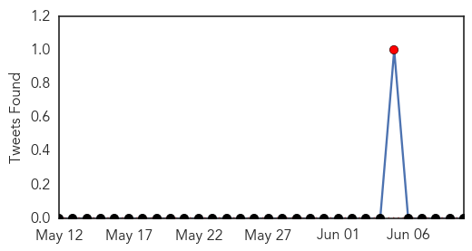

30 Day Trends
Web: 0 alerts, 0 warnings
Twitter: 1 alerts, 0 warnings
Top Articles:
- 0.964
- Palmerston North Hospital staff in isolation as more measles cases considered
- 0.936
- German Measles eliminated from Americas
- 0.930
- Indian woman with Tuberculosis sets off scare in 3 US states
- 0.913
- Alaska confirms 1st measles case in more than a decade in Fairbanks
- 0.824
- AMA supports tighter limit on non-medical vaccine exemptions
- 0.791
- AMA: No vaccine exemptions for religious reasons or personal choice
- 0.750
- Diphtheria-Stricken Boy Becomes Spain's First Case In 28 Years, Thanks To Anti-Vaxxers
Top Tweets:
-
No tweets found for Jun 10, 2015
Web/News Articles

Tweets
Article Locations

Article Confidences